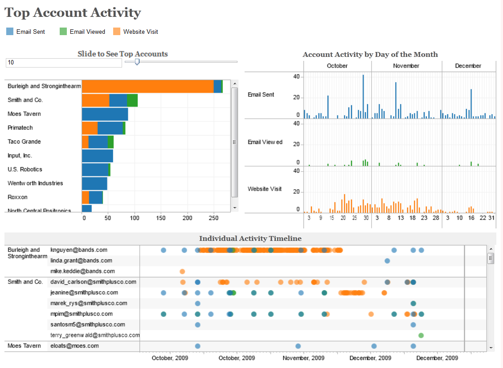
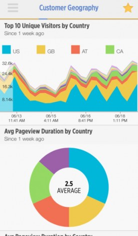
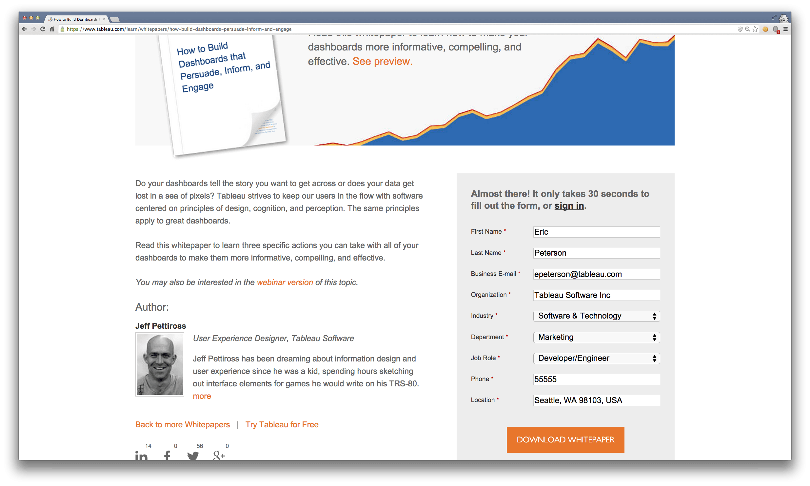
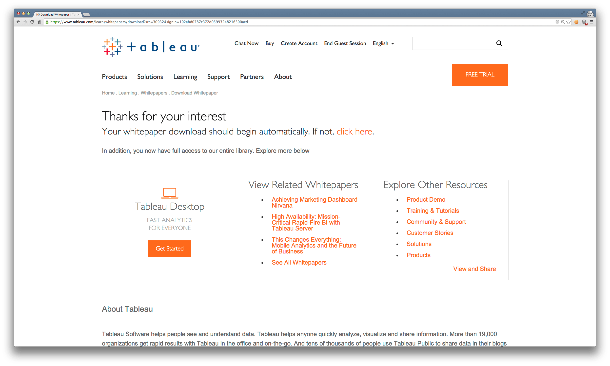
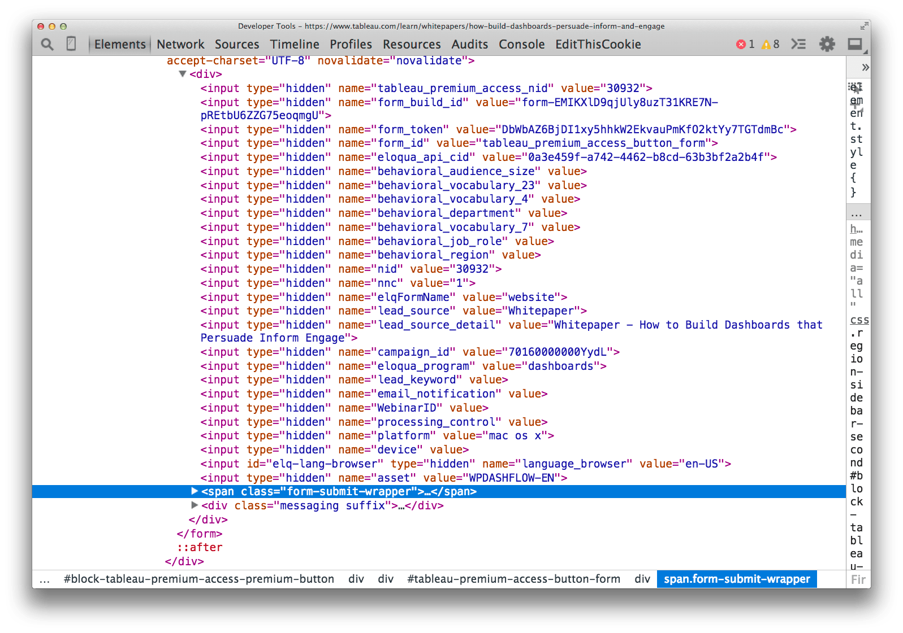
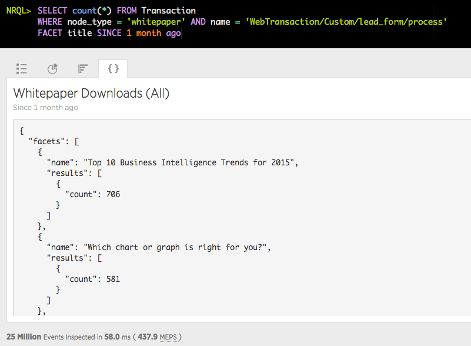
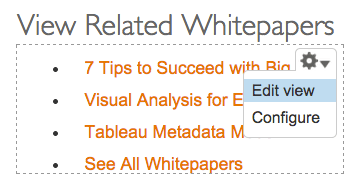

- Digital Transformation: every organization is now a software organization
- Marketing Needs: Lead generation, prospect engagement, scalability
- On-time, On-budget: Evaluate and adopt OSS where possible
Marketing Engineering?

Analytics at the speed of thought

Who buys Tableau and how?
Tableau provides value to customers in virtually all verticals, all departments, at all job levels. Marketing to such a broad audience has challenges.
- Industry relevancy: Tech, healthcare, manufacturers (etc.) want unique content relevant to their vertical
- Relevancy by role: Analysts, sysadmins, and executives have different needs and buying styles
- Depth in the funnel: Fresh prospects require different content compared to existing business
How we measure success
- Data collection: Every trial, whitepaper, training video, webinar download/interaction
- Event metadata: Attach lead source, campaign, firmographic, and other details to each event
- Analysis: Which campaigns/LSs/LSDs generated the most leads? The most customers? The most revenue?
- 
Enter: New Relic Insights
Scalable, real-time event database
- Performance and other software metrics from APM
- Decorate events with arbitrary metadata at run-time
<?php $value = get_uid(); newrelic_add_custom_parameter('uid', $value);- Add custom events from any source through an API
<?php newrelic_record_custom_event('Sale', $eventDataArray);
- 
Typical lead flow
- 
- 
- 
- Form POST tracked by APM
- Form Data as custom attrs
- User gets the whitepaper
- Content recommendations
Whitepaper download analysis 1/3
Whitepaper download analysis 2/3
Whitepaper download analysis 3/3
A business analyst might conclude
- Overall: more analysts download whitepaper content than execs/vps
- Analysts seem to prefer technical, tool-oriented content that makes them smarter
- Executives/VPs seem to prefer market reports, trends, vision, culture, and strategy-oriented content
- Battle plan: To increase engagement and click-throughs, and to provide sales with better prepared, higher quality leads, we should start a project to revamp the way we recommend whitepapers on the site.
Avoiding wasted effort
Why spin up a project with a creative brief, user scenarios, goals, tech specs, estimates, change requests, etc... When you don't have to?
- Lightning fast: Insights can tear through 100s of millions of records, sub-second
- A JSON API for running NRQL queries
- What if we integrated Insights with our app?
- 
Enter: Integrated Analytics
Give your app insights. Literally
Integrating with Drupal
With Drupal, we've integrated Insights at the deepest level possible:
- Entity API provides the conceptual framework, organizing Insights events into records with known properties
- Entity Field Query, a datastore-agnostic query builder, is used as the basis for remotely querying and retrieving Insights data
- Statistics API is used to define how and what data is collected and stored on each Transaction
How it looks programmatically
We can use Entity Field Query to build up and execute a query.
<?php
$efq = new EntityFieldQuery();
$efq->entityCondition('entity_type', 'insight');
$efq->entityCondition('bundle', array('Transaction', 'PageView'), 'IN');
$efq->propertyCondition('uid', array(5, 27), 'NOT IN');
$efq->propertyCondition('timestamp', array(
strtotime('February 26th, 2015 6:30pm'),
strtotime('February 26th, 2015 7:00pm'),
), 'BETWEEN');
$results = $efq->execute();
SELECT * FROM Transaction, PageView WHERE (uid != 5 AND uid != 27) SINCE 1 hour ago UNTIL 30 minutes ago
Insights for the NRQL-uninitiated
A more mundane use-case
Bringing it back to whitepapers
Not only can we build and execute NRQL queries in Insights from Drupal, we can also filter Drupal lists based on data returned by Insights.
It also just so happens the list of "related whitepapers" on our confirmation page is a Drupal View.
Filtering Views with Insights
Related Whitepapers for Analysts
Related Whitepapers for Execs & VPs
Just the tip of the iceberg
With your analytics deeply integrated with your app, imagine the possibilities
- Other confirmation/conversion pages: Sidebar/footer recommended content?
- A/B test the NRQL queries you're using to personalize content, automatically select and configure the winner
- E-commerce: tie conversions/successes to direct sales
- Web app security use-case: detect suspicious behavior and force re-authentication
- What can you think of for your use-case?
Thanks, Q&A, etc.
Also, we're hiring: careers.tableau.com